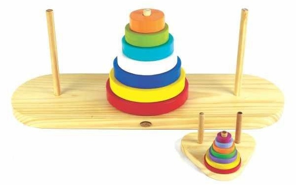

Histórico:
A Torre de Hanói é também bem conhecida como torre bramanismo
ou quebra-cabeças do fim do mundo.

Foi publicada em 1883 pelo matemático francês Edouard Lucas, informando
que o jogo era original do Vietnã e popular também da China e no Japão.
O autor oferecia mais de um milhão de francos para quem resolvesse o problema da
Torre de Hanói com 64 níveis, seguindo as regras do jogo.
Em 1884, outro matemático francês, chamado De Parville, desenvolveu a seguinte
história, que também costumava ser associada à Torre de Hanói.
Diz a lenda que... No grande templo de Benares, debaixo da cúpula que
marca o centro do mundo, há uma placa de bronze sobre a qual estão fixadas três
hastes de diamante, cada uma com a altura do osso cúbito do braço e tão fina como
o corpo de uma abelha. Em uma dessas agulhas, Deus, quando criou o mundo, colocou
64 discos de ouro puro, de forma que o disco maior ficasse com a placa sobre a
placa de bronze e os outros decrescendo até chegar ao topo. Isto se constituiu na
torre de bramanismo. Dia e noite, os monges transferiam incessantemente os discos
de uma haste para a outra, de acordo com as leis fixas e imutáveis do bramanismo,
que exigiam que os monges nunca movessem mais de um disco por vez e nunca deixassem
um disco maior ficar sobre o menor. Quando os 64 discos fossem transferidos para a
outra haste, a torre, o templo e as pessoas seriam transformados em pó e, com um
estrondo, o mundo desapareceria.
(Manoel, Luís Ricardo da Silva / Torre de Hanoi).
Fonte: http://www.utfpr.edu.br/cornelioprocopio/cursos/licenciaturas/Ofertados-
neste-Campus/matematica/laboratorios/material-didatico/torre-de-hanoi
Regras:
O objetivo do jogo consiste em deslocar todos os discos da primeira haste para a terceira,
respeitando as seguintes regras:
• Deslocar um disco de cada vez, o qual deverá ser o do topo de uma das três hastes;
• Um Disco não pode ser colocado acima de um menor que ele.